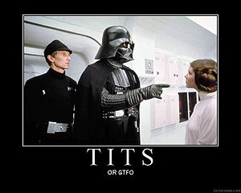

Cibercaza
 De: La Frikipedia, la enciclopedia extremadamente seria.
De: La Frikipedia, la enciclopedia extremadamente seria.
Lema de los cibercazadores
«No cam... no party»
~ Cibercazador practicando la cibercaza con una de las frases más usuales.
«TITS or GTFO»
~ Cibercazador en plena fase premasturbatoria.
«Expose thine teats or remove thyself!»
~ Cibercazador Primigenio cortejando a la dama.
Historia
 Darth Vader cibercazaba desde la Estrella de la Muerte (tenía Wi-Fi).
Si eres muy ducho en el
Unreal Tournament 3, puedes conseguir el logro "Cibercazador de caza mayor".
Aunque se discuten los orígenes de esta tradición, por consenso general se acepta que fué creada por nerds virgenes que buscaban un mínimo contacto con el sexo femenino.
En el siglo XX, los cibercazadores realizaban este ritual en las calles, lanzando arpones, redes y demás utensilios de pesca desde un coche a las víctimas (los más frikis les lanzaban una pokeball, otros llegaron a construir una pistolita de rayos como las de los Cazafantasmas... pero no llegaron a encontrar la pila nuclear, por lo que no las podían arrastrar hasta la caja). Dicho modus operandi fue desechado por la aparición de Internet y las numerosas demandas de agresiones.
Actualmente esta cacería solo se lleva a cabo en el canal de IRC de la Frikipedia, aunque también se extiende a cualquier otro chat de internet o foro, llegando a casos extremos el acoso que sufren las usuarias de los canales del chat del Terra.
Modus operandi
A veces los cibercazadores deben recurrir a la intimidación.
Cuando los usuarios de un chat detectan una presa, tienen varios modos de actuar según su personalidad, estado anímico, presión barométrica y litros de testosterona en sangre. Normalmente la degeneración sexual/mental de estos seres convive con una leve capacidad de raciocinio, por lo que suelen seguir unas reglas y pasos fijos:
Verificación de la hembra
Lo primero es asegurarse de que la víctima realmente sea una mujer, porque como todos sabemos, en internet los hombres son hombres, las mujeres son hombres y las niñas son agentes del FBI. Así que el primer paso es arrancarle de sus inocentes manos su méssenller, con la mínima pretensión de mantener una conversación civilizada y bien vista por la sociedad, ya que el cibercazador solo desea refutar la hipótesis de que se está poniendo palote con un gordo (Own3d).
También existen otros medios que ayudan a esta tarea, tales son hacer una exploración rápida vía WHOIS de los usuarios del canal, para detectar clones o ver si el ISP de la muchacha coincide con el de algún usuario que sabemos que es un graciosillo, por si acaso.
Por último, es vital conocer la jerga de los otros usuarios, y detectar similitudes. Por ejemplo, si "Lolita_caliente" empieza a cantar el Himno de la Internacional, ten por seguro que es el Doctor_grijander.
Dialéctica
Aquí los cibercazadores empiezan a derrochar talento comunicativo y gracia verbal (a nivel foca, sonidos guturales o máximo, sonidos de pollo en celo) para conseguir una vía de verificación creíble, su mésenller. Los cibercazadores, pueden actuar de varias maneras.
- El "yo ya follo": Consiste en cortejar a la muchacha haciéndose el interesante. El cazador rondará a la presa mostrando siempre un aire de superioridad mientras se gana su afecto mostrando interés por el tema de conversación que la hembra desarrolle. Así, cuando ella decida marcharse, el cazador rápidamente le dará su mésenller, para que puedan continuar tan inspiradora conversación sobre ombligos más tarde.
- El agresivo: El cazador agresivo atacará sin piedad hasta conseguir su objetivo, o hasta que el objetivo huya. Una típica técnica del cazador agresivo es decir que la chica es en realidad un tío, para que el sujeto se incomode y tenga que ceder a sus pretensiones. Si todo funciona bien, la pobre e indefensa joven cederá para que el resto del chat la tome como
el dulce recipiente de amor la hembra que es.
- El guarrete: Variación salida del agresivo, este sujeto comenzará a lanzar preguntas indiscretas sobre la depilación de la presa o cosas que solo suele preguntar un ginecólogo (no, ninguno tiene dicha carrera), así intenta burro en celo con una charla sobre los peligros de hacerlo sin capuchón.
- El santo: Este ha visto muchas pelis de polis, y se ha quedado con la copla del concepto poli bueno-poli malo, así que como una vil y trapera ave carroñera, esperará que el agresivo o guarrete acabe con la paciencia de la hembra, para asaltarla y consolarla de una manera hipócrita, pues su objetivo sigue siendo el mismo.
- El pelota: Variación pesada del santo, se deshará en halagos hacia la hembra. Suelen ser ignorados, por las mismas. No obstante, un pelota con talento, el pelota poeta, puede ser un gran competidor.
- El pro: El cazador pro utiliza como armas expresiones y memes que ha recogido de multitud de páginas inglesas. Por ejemplo, siempre abrirá la conversación diciendo _a/s/l?_. Y no perderá la ocasión de decir: TITS OR GTFO!
Al final, por una combinación de actitudes, uno siempre se acaba llevando el méssenller de la futura desgraciada, así que comienzan los preparativos de la siguiente fase.
Cam or photo
- Photo: (Prestigio +10 por unidad para la hembra) Ya se sabe que "una imagen vale más que... patada en los cojones", es decir, que no hay mejor testigo que un documento gráfico, por ello el cazador se afanara en conseguir una foto de la hembra.
- Video: (Prestigio +100 del tirón para la hembra) Pero la autentica verificación solo es lograda por aquellas intrépidas heroínas que con su más buena voluntad, conectan sus cámaras y nos posibilitan
una buena paja saber que tenemos a otra maravilla de la naturaleza (pelota +10) en el chat.
Lenguaje entre Cibercazadores
- Hucha: Dícese despectivamente de una mujer.
- Rabo: Un sujeto que dice ser hembra pero no da pruebas de ello, se suele utilizar el término rabo en conjunción con el método agresivo de cibercaza.
- Método binario: Usando la conjunción de frikismo informático y sabiduría de artes clásicas, los cibercazadores han desarrollado un método de identificación de posibles objetivos basándose en la filosofía aristotélica y los valores binarios. De esta forma todos los usuarios desconocidos del chat son un 0 (en acto son hombres), pero pueden ser un 1 (en potencia, una hembra). Cuando alguien identifica al sujeto como efectivamente hembra, su valor pasa a ser 1, ha alcanzado la máxima expresión de su capacidad.
TITS!
El último paso, aquí se irán nombrando aquellas Diosas que en su infinita humildad se muestren en todo su esplendor, es decir, sin ropa. Son las siguientes:

- Nota: Esta sección JAMAS volverá a ser editada.
Métodos y estrategias
El cibercazador no dudará en invocar a las Musas y usará el arte como un medio para llegar hasta sus victimas.
El cibercazador tampoco dudará en persistir, su férrea voluntad hará que jamás desista en su propósito.
Cibercaza en la Frikipedia
«Eres más basto que una infusión de harina»
~ [KrusheR] regañando a un cibercazador.
Últimamente, no se sabe si es porque [KrusheR] ha puesto un ambientador de polla en la Frikipedia o por el olor tan varonil que desprende Aque, están entrando mujeres al chat (según datos estadísticos unas seis veces más que antaño, es decir: Aque por 6). Con esto nos están descubriendo a los frikis macho un nuevo mundo, misterioso y desconocido, ese mundo llamado mujer, nace a así la cibercaza.
¿Sabías que...
- ...Es tradición poner una foto tuya la primera vez que entras al chat.
- ...Es tradición poner tu cam la segunda vez que entras al chat.
- ...Es tradición hacer un strip por cam la tercera vez que entras al chat.
- ...Es tradición hacer... bueno, para planear las orgías mejor entras al chat.
- ...Las tres premisas anteriores quedan eliminadas si eres un hombre.
- ...Este artículo lo escribió un cibercazador/salido.
- ...No se sabe por qué entran al chat tantas chicas últimamente.
- ...En el chat una chica es suerte, una ninfomana, un regalo de dios.
Véase también
Autor(es):
- Max Slug
- Frikiman
- Aque
- Khazike Khashondo
- El Sevillano
- Nxr
- Alzombie
- Petrix5
- Taruntela
- Santa wii
Frikipedia 2005-2016, Licencia
GFDL 1.2 - Extraído por FrikiLeaks